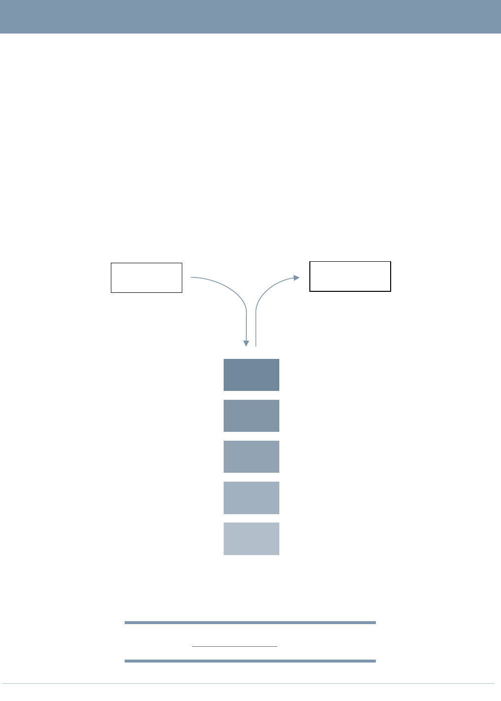
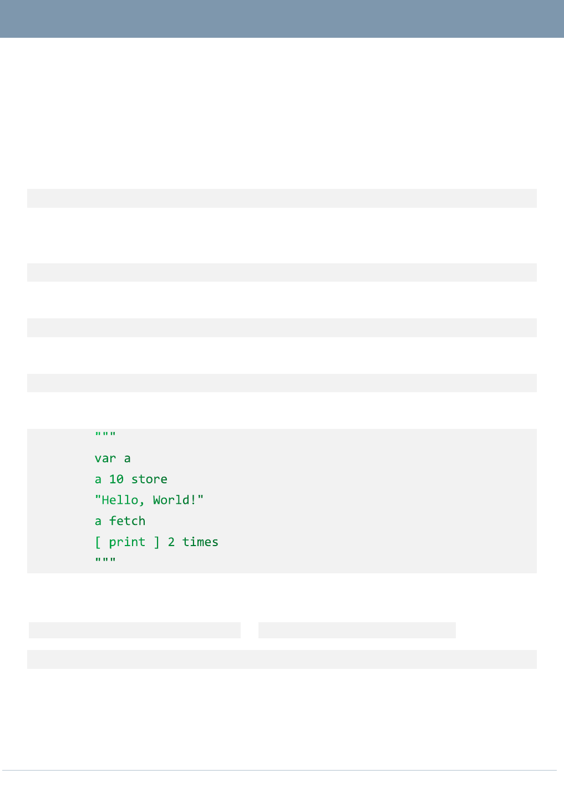
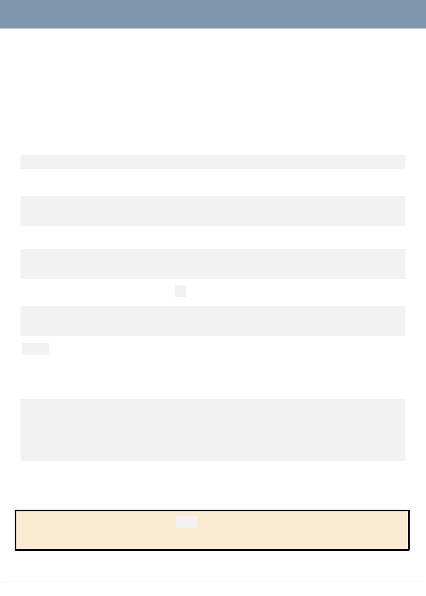
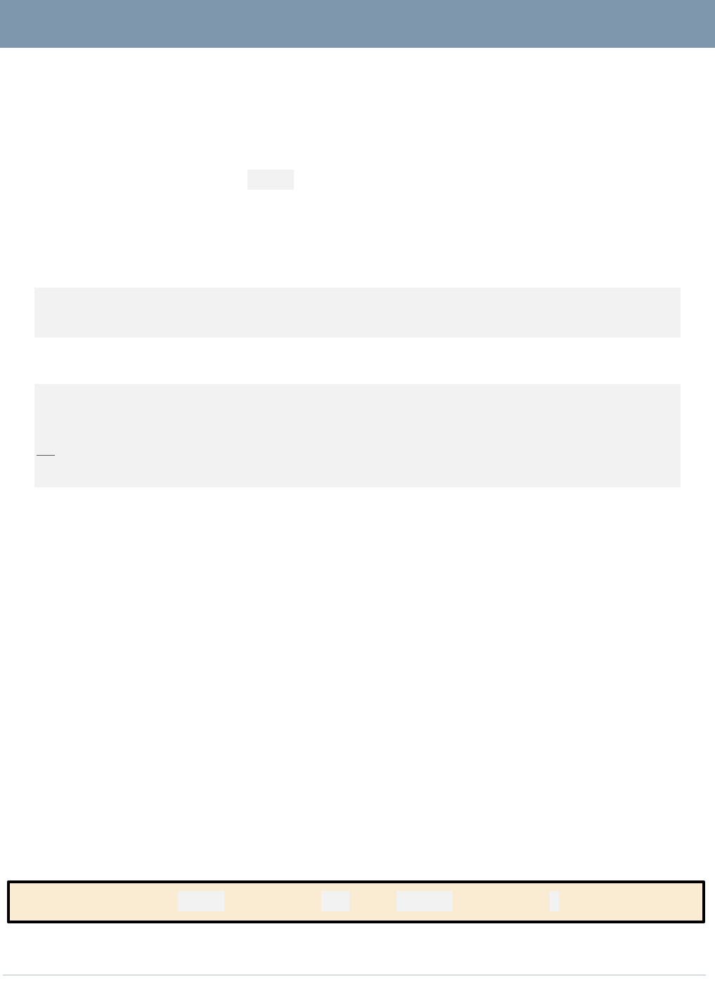

STRUIXLANG
1.0 Release Candidate 1
A stack-based Programming language implemented in Python.
Sayak Brahmachari
TABLE OF CONTENTS
Contents
About struixLang _________________________________________________________________________________________ 1
Use Cases _________________________________________________________________________________________________ 2
Usage ______________________________________________________________________________________________________ 3
Data Model _______________________________________________________________________________________________ 4
List of Primitive Words in this Implementation _______________________________________________________ 5
struixLang 101 ___________________________________________________________________________________________ 7
Execution Process _________________________________________________________________________________________________7
Syntax and Similar Stuff __________________________________________________________________________________________7
Basics of struixLang _____________________________________________________________________________________ 8
Input and Output __________________________________________________________________________________________________8
Variables and Constants ________________________________________________________________________________________ 10
Mathematical Operations _______________________________________________________________________________________ 11
Stack Operations ________________________________________________________________________________________________ 12
DUP – Duplicate ToS _________________________________________________________________________________________ 12
DROP – Remove ToS __________________________________________________________________________________________ 12
SWAP – Swap ToS and 2oS ___________________________________________________________________________________ 12

STRUIX LANG
Page 1
About struixLang
A stack-based programming language implemented in Python3.
struixLang implements a stack, which is a list of objects which the program operates on.
Also, a dictionary is present, containing words (functions/subroutines) which may be
executed in a program.
Several primitive (read: built-in) words are pre-defined and mechanisms to define new
user-defined words within struixLang itself are in place.
44
33
22
11
00
INPUT
OUTPUT
Stack = Struix
Based on Felix Pleşoianu’s scratch-lang.

STRUIX LANG
Page 2
Use Cases
The most potential use case for struixLang is as an embedded domain specific
scripting language.
Being so compact, struixLang can be easily adapted to the specifics of the host language
and of the intended task. Not to mention its inherent simplicity should ensure acceptable
performance even on top of another interpreted language (like this implementation).

STRUIX LANG
Page 3
Usage
To run the default shell for struixLang, run the repl.py file under Python 3.
The interpreter can also be imported from within other Python programs.
import struixTerp
However, the interpreter by itself does not form the language. To import the primitives
do:
import struixPrimitives
Then create a new instance of the interpreter:
terp = struixTerp.Terp()
Add the primitives to it:
struixPrimitives.AddWords(terp)
And give the interpreter a string of struixLang code to run:
terp.run(
)
However, some potentially dangerous operations are enabled only on passing
terp.ENABLE_UNSAFE_OPERATIONS to struixPrimitives.AddWords():
struixPrimitives.AddWords(terp, terp.ENABLE_UNSAFE_OPERATIONS)

STRUIX LANG
Page 4
Data Model
struixLang supports the following data types:
Integers,
Floats,
Strings,
Boolean,
Lists, and
Words.
However, the current implementation can utilize words which put or use values of any
type supported in Python 3.
Also note that as struixLang is a Homoiconic Language, it can treat code as data and data
as code, hence words are included in the list above.
STRUIX LANG
Page 5
List of Primitive Words in this Implementation
1. PRINT – Pops and displays the last item put in the stack
2. PSTACK – Displays all items of the stack in Last-In-First-Out (LIFO) order.
3. RAISE – Raises
4. EXIT – Stops the execution of the struixLang code.
5. Operators from CALCGEN:
a. + - Adds last 2 numbers from stack or concatenates
b. – - Subtracts last 2 numbers from stack.
c. * - Multiplies last 2 numbers form stack.
d. ** - Raises 2
nd
last number to the power of last number.
e. / - Divides last 2 numbers.
f. // - Divides last 2 numbers and removes decimal part to produce an integer.
g. % - Gives the remainder of division of last 2 numbers.
h. @
i. <<
j. >>
k. %
l. |
m. ^
n. ~
o. < - Relational operator LESS THAN.
p. > - Relational operator GREATER THAN.
q. <= - Relational operator LESS THAN OR EQUAL TO.
r. >= - Relational operator GREATER THAN OR EQUAL TO.
s. == - Relational operator EQUAL TO.
t. != - Relational operator NOT EQUAL TO.
u. IN – Check if 2
nd
last item is present within last item (string, list, etc).
v. IS – Checks if the 2
nd
last item is the same item (same instance of same class)
as last item.
w. OR – Logical or Boolean OR.
x. AND – Logical or Boolean AND.
6. DUP – Duplicates last item in stack.
STRUIX LANG
Page 6
7. DROP – Removes last item from stack.
8. SWAP – Swaps last item with 2
nd
last item.
9. OVER – Duplicates and pushes 2
nd
last item to stack.
10. ROT – Duplicates and pushes 3
rd
last item to stack.
11. VAR – Creates a variable with following name.
12. CONST – Creates constant with following name and value.
13. STORE – Stores a value to a variable.
14. FETCH – Retrieves value from variable.
15. # (also COMMENT) – Flags a line for no execution.
16. PYEVAL – Evaluates a Python expression.
17. PYEXEC – Executes a Python statement.
18. PYLITEVAL – Evaluates a Python expression safely.
19. DEF – Starts creation of a user-defined new word.
20. END – Ends a new user-defined word definition.
21. [ - Starts a list.
22. LENGTH (also LEN) – Finds the length of a list or a string.
23. ITEM – Returns an item from a list
24. NOT – Logical or Boolean NOT.
25. TRUE – Logical or Boolean value TRUE, HIGH, or 1.
26. FALSE – Logical or Boolean value FALSE, LOW, or 0.
27. RUN – Runs a list containing struixLang code.
28. TIMES – Runs a list a number of times.
29. IFTRUE – Runs a list on receiving TRUE.
30. IFFALSE – Runs a list on receiving FALSE.
31. IFELSE – Runs one of two lists on receiving either TRUE or FALSE.
32. WHILE – Runs a list while another list yields TRUE.
33. DOWHILE – Exit-Control Loop similar to WHILE.
STRUIX LANG
Page 7
struixLang 101
EXECUTION PROCESS
1. Any integer, float or string goes to the stack.
2. Any comments are ignored.
3. Anything else is interpreted.
SYNTAX AND OTHER STUFF
a. Parts of code are separated only by whitespace.
“Enter 2 Numbers:” print [ input ] 2 times + print is same as
“Enter 2 Numbers:” print
[ input ] 2 times
+
print
b. Integers are numbers with no decimal points.
c. Floats are numbers with decimal points
d. Strings start with either ‘ or “.
e. Comments start with either # or COMMENT followed by a space.
f. struixLang is case-insensitive (except for strings; this can be easily changed with
minor modifications to the interpreter code).
g. Infinity (inf) is a float.

STRUIX LANG
Page 8
Basics of struixLang
INPUT AND OUTPUT
Keeping the above rules in mind, specifically Rule 1, the following should put the integer
10 on the stack:
>>> 10
To verify, type the following and press enter:
>>> pstack
10
Let’s try again:
>>> 11.5
>>> pstack
Surprise, the output will not be just 11 but the following:
11.5
10
pstack is the word (command/function) which is used for displaying the entire stack
(working memory) in Last-In-First-Out (LIFO) order.
To display the last element put in the stack, use print:
>>> print
11.5
>>> pstack
10
THE IMPORTANT-LOOKING NOTE: print and most other words remove the item which it
prints or operates on from the stack.
STRUIX LANG
Page 9
Strings can be put in the stack is a similar way:
>>> “Hello, World!” print
Hello, World!
>>> ‘Hello Again!’ print
Hello Again!
The input word comes to your rescue when you want to accept a value from the user:
>>> “Enter a number:” print input
Enter a number:
__
The last line is a prompt for the user to type something. Whatever the user enters is
pushed (appended) to the stack.
The following number accepts a number, squares it and displays it.
>>> “Enter a number:” print input 2 ** print
Enter a number:
10
100
STRUIX LANG
Page 10
VARIABLES AND CONSTANTS
Sometimes a value needs to be stored for easy reference. Variables are used for that. A
variable can be created with the VAR word:
>>> var a
To store values in it, the STORE word is used:
>>> a 10 store
Values are retrieved using the FETCH word:
>>> a fetch print
10
But for some instances a permanent value need be assigned a name, a value which is not
supposed to change after it has been assigned. The CONST word is what’s needed:
>>> const a “Constant String”
>>> a pstack
“Constant String”
NOTE: Constants don’t need a FETCH word to get its value, it is accessed directly.

STRUIX LANG
Page 11
MATHEMATICAL OPERATIONS
In almost all programming languages, and in books, the operator is almost always placed
in between the operands like 1 + 2. This is called infix notation.
struixLang is a stack-based language and before an operator can work, the operands need
to be on the stack. Hence, to reduce the complexity of the interpreter, mathematical (and
most other) operations are expressed in postfix notation.
1 + 2 1 2 +
(34 + 78) * 8 34 78 + 8 *
Let’s try them out:
>>> “Enter a number:” print const n input n 2 + n * print
Enter a number:
10
120
What happens:
1. A message is displayed.
2. The input (10) is set as constant.
3. n 2 + n * = (n + 2) n * [∵ n 2 + n + 2]
= (n + 2) * n
4. = (10 + 2) * 10 [Putting value of n]
5. The result (120) is displayed.
NOTE about Division: 5 2 / will produce 2.5 while 5 2 // will produce 2.
STRUIX LANG
Page 12
STACK OPERATIONS
One of the most important parts of a stack-based language, stack operations are
necessary for almost everything more complex than adding 2 numbers and displaying
them.
ToS – Top of Stack; last element put in stack.
2oS – 2
nd
Item on Stack; below ToS.
3oS – 3
rd
Item on Stack, and so on…
DUP – Duplicate ToS
>>> 10 pstack
10
>>> dup pstack
10
10
DROP – Remove ToS
>>> 10 11 12 pstack
12
11
10
>>> drop pstack
11
10
SWAP – Swap ToS and 2oS
>>> 10 11 pstack
11
10
>>> swap pstack
10
11
STRUIX LANG
Page 13
OVER – Copy 20S on top of ToS
>>> 10 11 pstack
11
10
>>> over pstack
10
11
10
ROT – Move 3oS on top of ToS
>>> 10 11 12 pstack
12
11
10
>>> rot pstack
10
12
11
COMMENTS
>>> 10 11 + print # This is a comment.
21
Note that a space is needed after the # for the comment to work.
STRUIX LANG
Page 14
LIST
Lists are like miniature versions of the stack
†
; they can store anything the stack can store.
Lists start with the [ symbol and items in it are separated by spaces. Its end is marked by
a ].
>>> [ 1 2 3 ] pstack
[1, 2, 3]
Nested Lists
Lists can store anything the stack can store, and the stack can store lists. When a list is
stored in a list the structure is known as nested lists.
>>> [ 1 2 3 [ 'a' 'b' 'c' ] ] pstack
[1, 2, 3, ['a', 'b', 'c']]
†
The stack is actually a list.